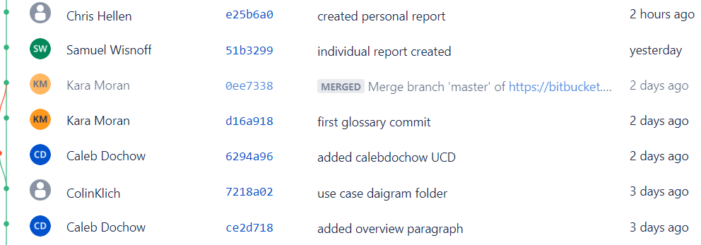

Project 1 Report
Team Members
| Name |
CWID |
Email |
Hours Worked |
| Caleb Dochow |
12158065 |
cdochow@crimson.ua.edu |
Hours Spent: 6 |
| Chris Hellen |
12066979 |
chellen@crimson.ua.edu |
Hours Spent: 6 |
| Colin Klich |
12114115 |
cmklich@crimson.ua.edu |
Hours Spent: 6 |
| Kara Moran |
12260246 |
kjmoran@crimson.ua.edu |
Hours Spent: 6 |
| Samuel Wisnoff |
CWID |
@crimson.ua.edu |
Hours Spent: 6 |
Task Distrbution Table
| Name |
Task |
Percent Complete |
| Caleb Dochow |
Paragraph, Report.html, Use Case Diagram |
20% |
| Chris Hellen |
Use Case Desc., Report.html, Use Case Diagram |
20% |
| Colin Klich |
Use Case Desc., Report.html, Use Case Diagram |
20% |
| Kara Moran |
Glossary, Report.html, Use Case Diagram |
20% |
| Samuel Wisnoff |
Use Case Desc., Report.html, Use Case Diagram |
20% |
Project Overview
For Project 1, our group focused on the ChocAn software. This software handles everything, including verifying members, tracking member activity, organizing fees, and updating member records. Every individual on team 13 was tasked to produce a group file "Report.html" as well as submit a personal html file. Our group split up the necessary tasks to ensure equal participation for fairness and efficiency. Work was divided to have one person handle the Paragraph, one person handle the Glossary, and the rest handle the Use Case Definitions. After a task is complete, we move on to help with another task. The project also required every member to create their own Use Case Diagram, which allowed use to produce the best possible diagram for our final "Report.html". As mentioned earlier, we have provided Use Case Descriptions and a Glossary to further elaborate on our Use Case Diagram. This is featured in "Report.html".
Glossary
Acme Accounting Services Third-party organization partnered with ChocAn to provide financial procedures
ChocAn Data Center: Central system which holds all data concerning members, allows managers to update information about members, and automatically runs accounting procedure weekly
Chocoholics Anonymous (ChocAn): An organization dedicataed to helping people addicted to chocolate
Computer terminal: Interface available for providers to assist members
Electronic funds transfer (EFT): Record which contains data for the week's fees
Member card: Card which holds member number encoded on magnetic strips
Member number: Unique nine-digit code addigned to each member
Member: Patron of ChocAn seeking help for chocolate addiction
Monthly fee: Payment which entitles members to unlimited access of ChocAn's services
Provider directory: directory which holds service codes for each service
Provider form: Documentation filled out by provider to verify software's service record
Provider: Health care professional employed by ChocAn to provide a variety of services to members
Report: weekly document sent as email
Service code: Unique number that corresponds to the service received by a member
Service fee: Cost associated with a certain service, paid by ChocAn
Service record: Document recorded after each member's service to keep important information in ChocAn Data Center
Summary report: Document given to manager for them to track payments due for the week

Use Case Descriptions
Bitbucket Statistics
